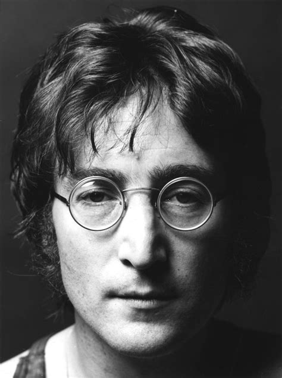
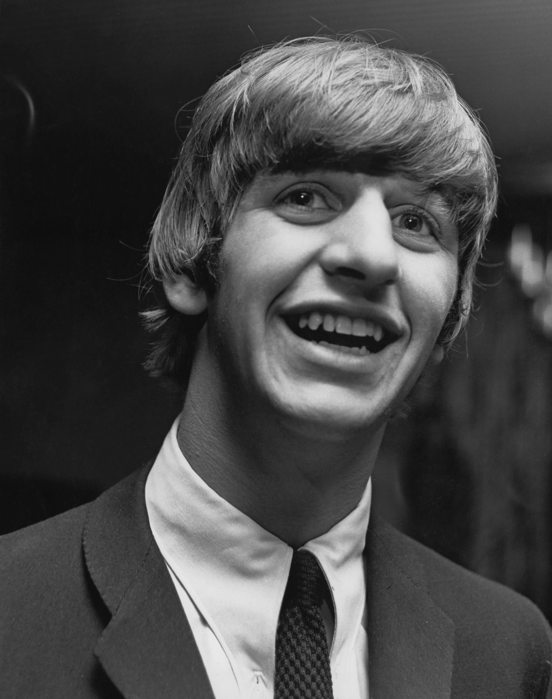
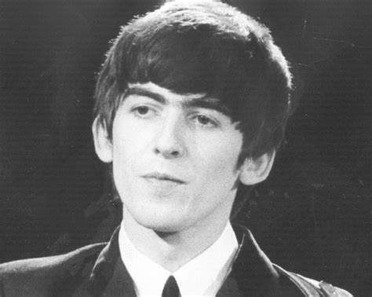

John Winston Ono Lennon, nato John Winston Lennon , è stato un cantautore, polistrumentista, artista e attivista britannico.
 Sir James Paul McCartneyè un cantautore, compositore, polistrumentista, produttore discografico e attivista britannico.
Sir James Paul McCartneyè un cantautore, compositore, polistrumentista, produttore discografico e attivista britannico.

Sir Ringo Starr, pseudonimo di Richard Starkey, è un cantautore, batterista, polistrumentista, compositore, attore e pittore britannico.

George Harrison è stato un cantautore, polistrumentista, compositore, attore, produttore cinematografico e discografico britannico.